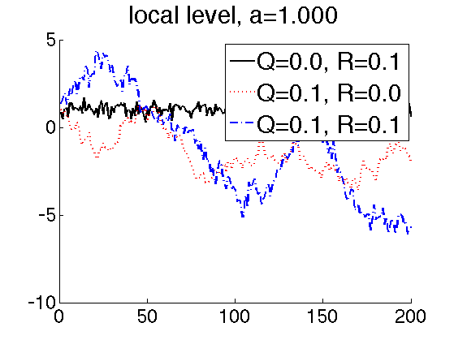
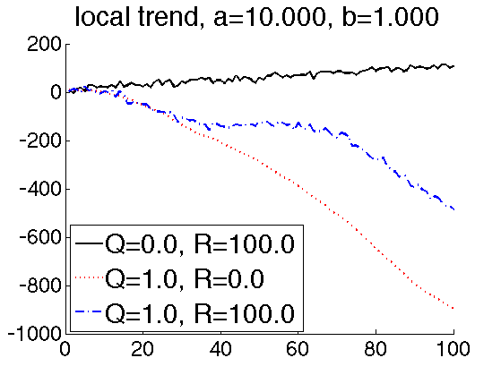
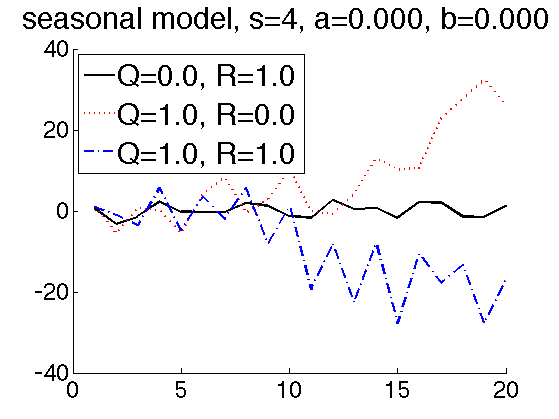

Time series as s state space model
State = (level, trend, q3, q2, q1)
X(t+1) = A X(t) + noise(Q) Y(t) = C X(t) + noise®
Contents
% This file is from pmtk3.googlecode.com linestyles = {'-', ':', '-.'}; colors = {'k', 'r', 'b'};
Local level model
setSeed(0); ss = 1; % state size os = 1; % observation size A = [1]; C = [1]; Qs = [0, 0.1, 0.1]; Rs = [0.1, 0, 0.1]; a = 10; figure; hold on for i=1:3 Q = Qs(i); R = Rs(i); a = 1; initmu = [a]; initV = 10*eye(ss); T = 200; [z,y] = ldsSample(A, C, Q, R, initmu, T); plot(y, 'color', colors{i}, 'linestyle', linestyles{i}, 'linewidth', 2); legendstr{i} = sprintf('Q=%3.1f, R=%3.1f', Q, R); end title(sprintf('local level, a=%5.3f', a), 'fontsize', 30); legend(legendstr, 'fontsize', 30) set(gca, 'fontsize', 24); printPmtkFigure timeSeriesLocalLevel
Local trend model
setSeed(0); ss = 2; % state size os = 1; % observation size A = [1 1; 0 1]; C = [1 1]; Qs = [0, 1, 1]; Rs = [100, 0, 100]; figure; hold on a = 10; b = 1; for i=1:3 Q = Qs(i); R = Rs(i); initmu = [a, b]'; T = 100; [z,y] = ldsSample(A, C, Q, R, initmu, T); plot(y, 'color', colors{i}, 'linestyle', linestyles{i}, 'linewidth', 2); legendstr{i} = sprintf('Q=%3.1f, R=%3.1f', Q, R); end title(sprintf('local trend, a=%5.3f, b=%5.3f', a, b), 'fontsize', 30) legend(legendstr, 'fontsize', 30, 'location', 'southwest') set(gca, 'fontsize', 24); printPmtkFigure timeSeriesLocalTrend
seasonal model
setSeed(0); ss = 2+3; % state size os = 1; % observation size A = [1 1 0 0 0 0 1 0 0 0 0 0 -1 -1 -1 0 0 1 0 0 0 0 0 1 0]; C = [1 1 1 0 0]; Qs = [0, 1, 1]; Rs = [1, 0, 1]; %Qs = [0]; %Rs = [0]; figure; hold on a = 0; b = 0; q4 = 1; q3 = 2; q2 = -1.5; for i=1:numel(Qs) Q = Qs(i); R = Rs(i); initmu = [a, b, q4, q3, q2]'; T = 20; [z,y] = ldsSample(A, C, Q, R, initmu, T); plot(y, 'color', colors{i}, 'linestyle', linestyles{i}, 'linewidth', 2); legendstr{i} = sprintf('Q=%3.1f, R=%3.1f', Q, R); end title(sprintf('seasonal model, s=4, a=%5.3f, b=%5.3f', a, b), 'fontsize', 30) legend(legendstr, 'fontsize', 30, 'location', 'northwest') set(gca, 'fontsize', 24); printPmtkFigure timeSeriesSeasonal